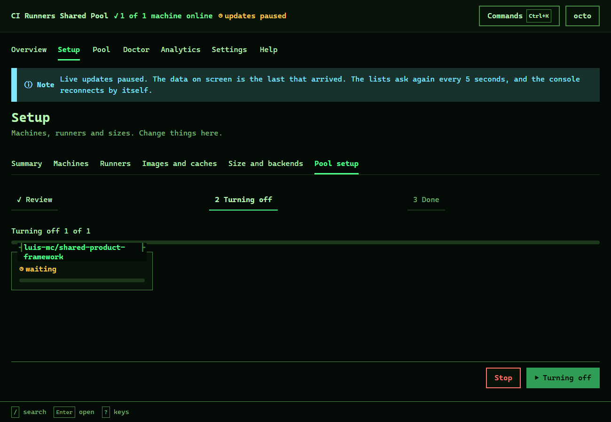
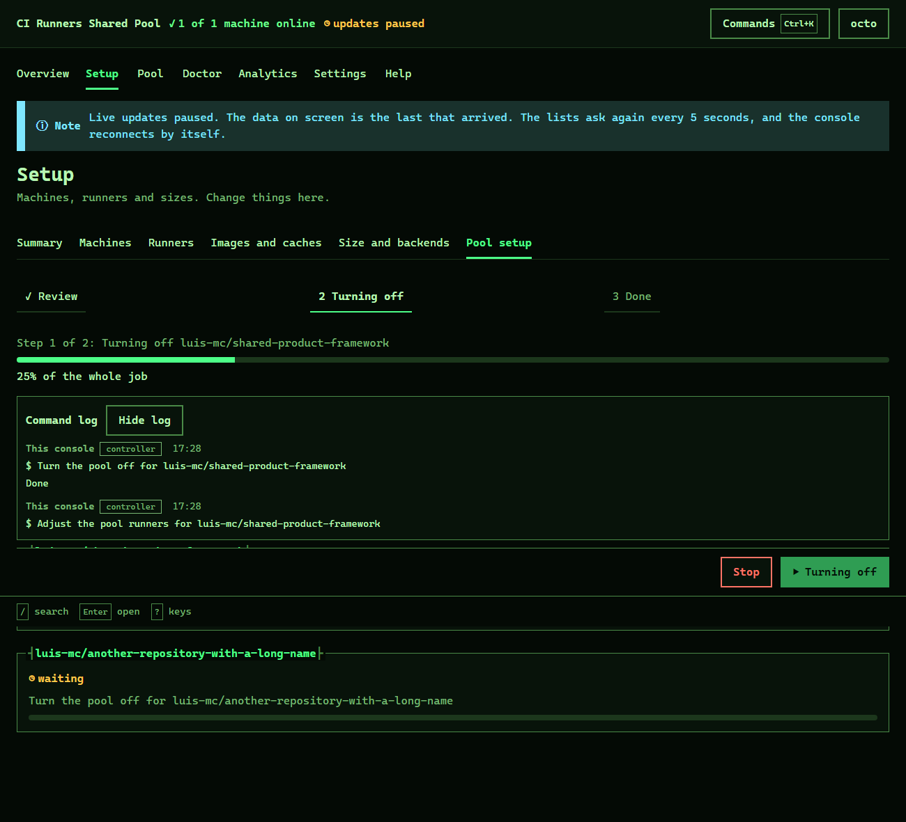
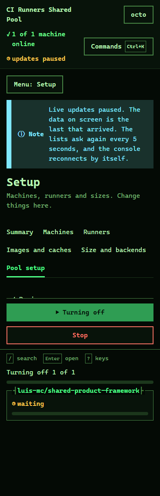
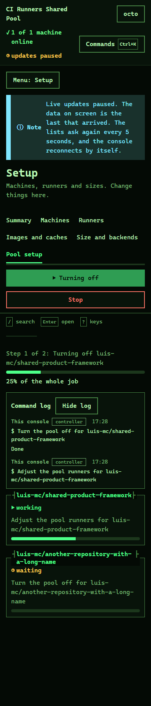
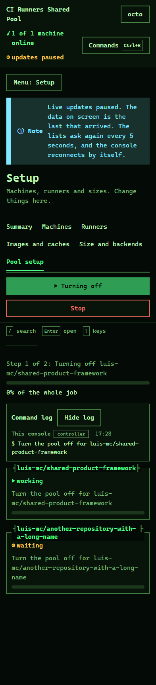
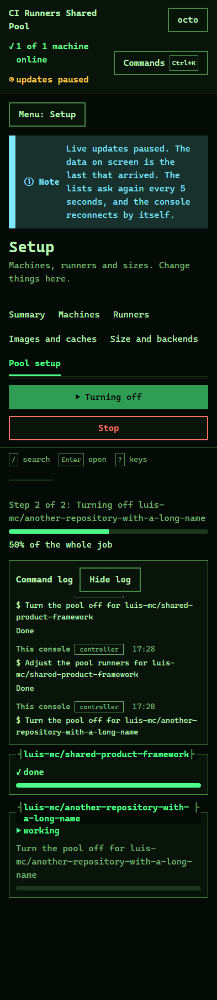
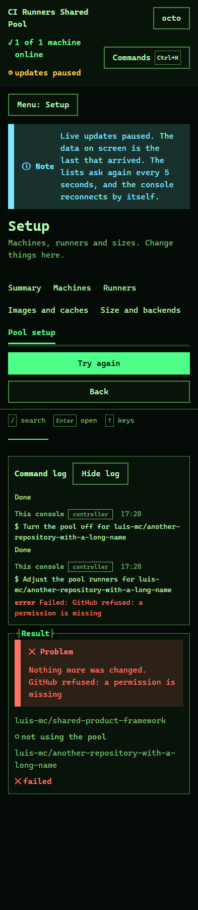
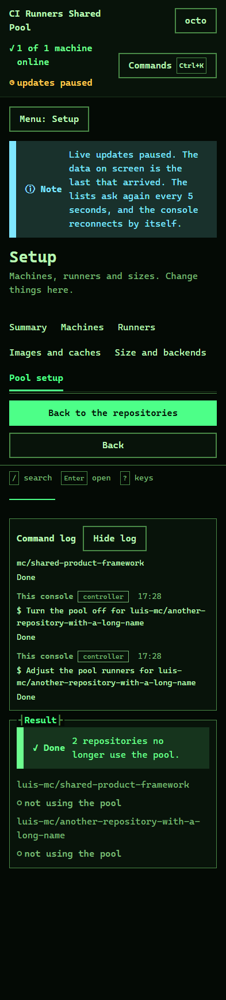

Actual size, one picture per row. Before: the two-line card title covers the bar, both bars stay empty and the card says waiting while the server works. After: the card is full width inside the wizard, the title is on one line and clear of the bar, the card says the step in hand, the card bar and the main bar are half way; the second repository says waiting because its turn has not started.







